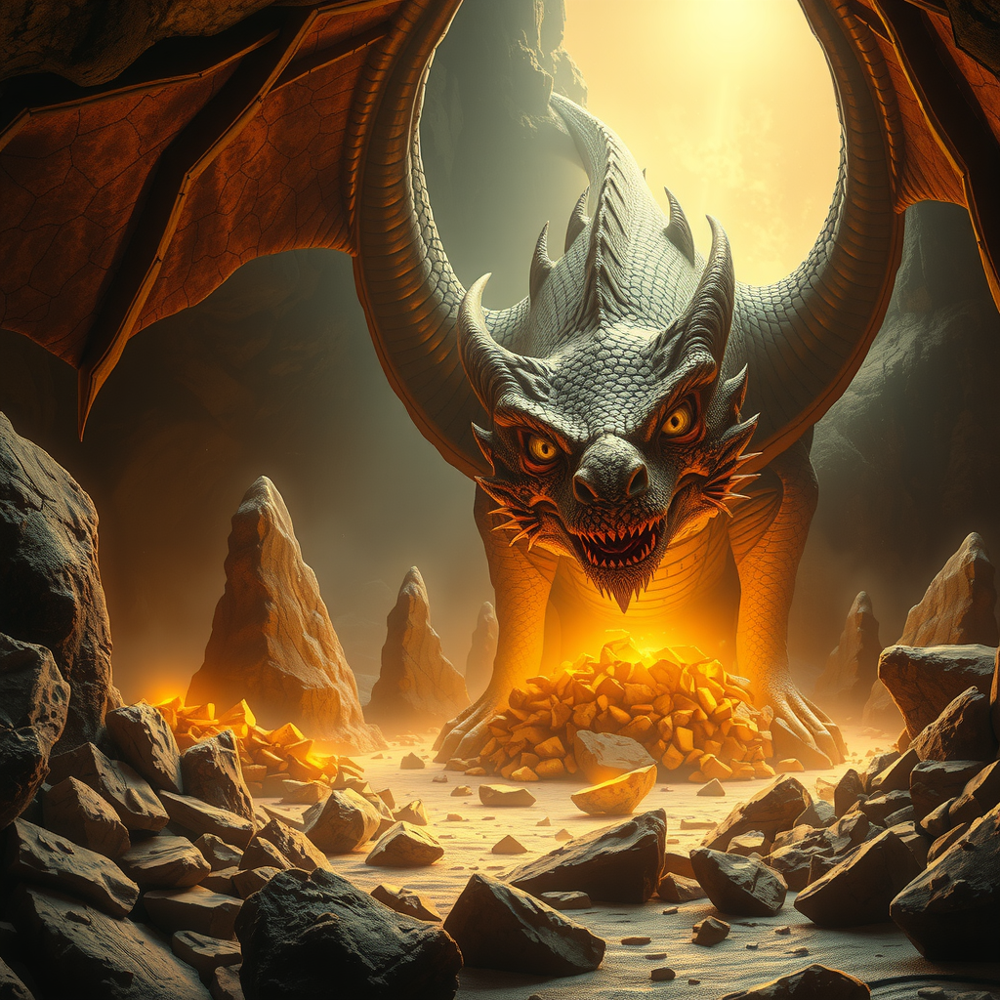

Capítulo 6: El Duelo de Ingenio

Spike miró fijamente a los ojos del dragón, su mente trabajando rápidamente en el acertijo. El resplandor dorado del tesoro iluminaba la cueva, creando sombras danzantes en las paredes.
Leer másTras un momento de reflexión, Spike respondió con firmeza: "La respuesta es el corazón". El dragón arqueó una ceja, sorprendido. "Interesante... muy interesante. Pero no creas que será tan fácil, pequeño aventurero. Veamos qué tan astuto eres realmente." Sus ojos brillaron con un destello de astucia. "Responde esto: 'Soy un eco sin voz, un camino sin pies, y una sombra sin luz. ¿Qué soy?" Spike sonrió, mostrando sus colmillos. "Es 'Un recuerdo', señor dragón.." "¡Impresionante!" rugió el dragón, aunque su voz denotaba cierta frustración. "Pero aquí viene algo más complejo: 'Cuanto más me quitas, más grande me vuelvo. ¿Qué soy?'" "Un agujero", respondió Spike sin titubear. "Cuanto más tierra le quitas, más grande se hace." El dragón comenzó a pasearse por la caverna, sus escamas brillando con reflejos dorados. "En todos mis años, nunca había encontrado una mente tan ágil en un ser tan pequeño. Pero tengo una última prueba para ti: 'Soy lo que soy, pero si me nombras, dejo de ser lo que soy. ¿Qué soy?'" Spike cerró los ojos por un momento, pensativo. "El silencio", respondió suavemente. El dragón se detuvo en seco, sus enormes alas plegándose contra su cuerpo. "Spike, el perro pirata, has demostrado no solo valentía al adentrarte en estas cuevas, sino una sabiduría que pocos poseen." Su voz se tornó grave y preocupada. "Sin embargo, debo advertirte sobre algo crucial." "¿Qué sucede?" preguntó Spike, notando el cambio en el tono del dragón. "Este tesoro... estas piedras doradas que tanto has buscado... llevan consigo una maldición antigua. Durante doscientos mil años he sido su guardián, no por codicia, sino por deber. La maldición que contienen podría devastar al mundo exterior si alguna vez saliera de esta cueva." Spike observó las montañas de oro que lo rodeaban, ahora con una nueva perspectiva. "¿Qué tipo de maldición?" El dragón se acercó, su aliento cálido moviendo el pelaje de Spike. "Una maldición que puede corromper el corazón más puro, transformar el amor en odio, la alegría en desesperación. He visto imperios caer por apenas una de estas piedras. La codicia que despiertan... es solo el principio." "Pero entonces, ¿por qué permitirme llegar hasta aquí?" cuestionó Spike. Los ojos del dragón brillaron con un destello de esperanza. "Porque en todos estos milenios, nunca había encontrado a alguien como tú. Alguien que pudiera ver más allá de lo evidente, que pudiera resolver los acertijos no solo con inteligencia, sino con sabiduría. Quizás... quizás tú podrías ser la clave para romper esta maldición." "¿Romper la maldición? ¿Cómo?" El dragón extendió sus alas, creando sombras que danzaban por toda la caverna. "Existe una manera... pero el precio podría ser demasiado alto, incluso para alguien tan valiente como tú. La decisión que deberás tomar podría cambiar no solo tu destino, sino el de todos los que conoces." Spike miró hacia la entrada de la cueva, pensando en su amo que lo esperaba arriba. "¿Cuál es esa decisión?" El dragón sonrió misteriosamente, sus dientes brillando en la penumbra. "Primero, debes entender la verdadera naturaleza de esta maldición. Una historia que comenzó hace milenios, cuando los dioses aún caminaban entre los mortales..." Continuará...